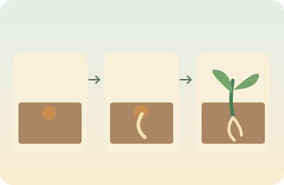

पुस्तक 03 / भाग 03
साहित्य और पठन-बोध
Literature & comprehension
भाग 03 · PHASE 3
साहित्य और पठन-बोध
कहानी, कविता, प्रकृति, विज्ञान और समाचार।
Literature & comprehension
 21
21अपठित गद्यांश
Reading comprehension2 पाठ · 1 कार्यपत्रक
पढ़ें → 22
22कहानी की रचना
Story structure2 पाठ · 1 कार्यपत्रक
पढ़ें → 23
23प्रकृति पर वर्णन
Descriptive prose2 पाठ · 1 कार्यपत्रक
पढ़ें → 24
24पर्यावरण और जल
Environmental reading2 पाठ · 1 कार्यपत्रक
पढ़ें → 25
25लोककथा और संस्कृति
Folk tales and culture2 पाठ · 1 कार्यपत्रक
पढ़ें → 26
26कविता और लय
Poetry and rhythm2 पाठ · 1 कार्यपत्रक
पढ़ें → 27
27यात्रा वृत्तांत
Travel writing2 पाठ · 1 कार्यपत्रक
पढ़ें →
28विज्ञान और सूचना
Informational prose2 पाठ · 1 कार्यपत्रक
पढ़ें → 29
29समाचार और सूचना-पठन
News and notices2 पाठ · 1 कार्यपत्रक
पढ़ें →30साहित्य और पठन पुनरावृत्ति
Reading synthesis2 पाठ · 1 कार्यपत्रक
पढ़ें →